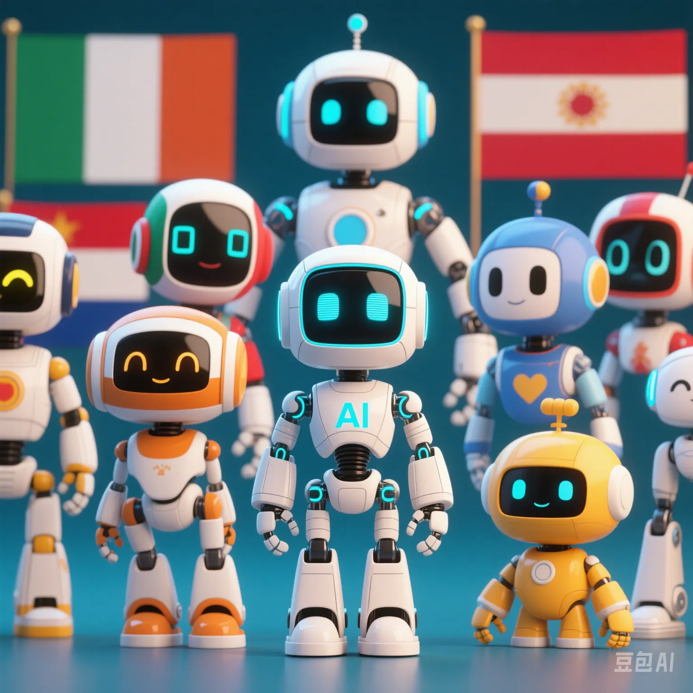

Does AI Have Morality? A Full Record of Global Artificial Intelligence Ethical Conflicts
PeaceLove.Top Insights :2025-04-17
🤖 Does AI Have Morality?
With the continuous progress of artificial intelligence technology, AI has gradually evolved from a 'tool' to a 'decision - maker'. Today, AI is no longer just a machine that executes instructions. It is participating in more complex decision - making processes, such as in medical diagnosis, judicial sentencing, and autonomous driving. Therefore, the question of whether AI has'morality' has begun to attract extensive attention.
The Core Issues of AI Morality
1. Transparency of Decision - making
Behind the decisions made by AI, there is often a lack of transparent explanations. This makes people question whether AI can make decisions that meet ethical standards.
2. Algorithmic Bias
Since the training data of AI may be biased, AI's decisions may favor certain groups or positions, thereby exacerbating social inequality.
3. Autonomous Decision - making Ability
Some AI systems already have autonomous decision - making ability. This makes people start to think: When AI makes decisions in complex situations, can it follow moral norms?
🌐 Global AI Ethical Conflicts: Challenges from Law to Culture
With the wide application of AI, ethical conflicts on a global scale have become more prominent. There are significant differences in the understanding and handling of AI ethics among different countries and regions. Let's look at a set of data to understand the differences in how different countries deal with AI ethical conflicts.
Global Overview of AI Ethical Conflicts
| Country/Region | Focal Point of Moral Conflict | Main Ethical Issues | Response Measures |
|---|---|---|---|
| USA | Privacy and Surveillance | Abuse of big data, AI surveillance issues | Proposed the 'AI Ethics Act' to strengthen supervision |
| China | Social Stability and AI Application | Abuse of AI in social management | Enhanced AI ethical review and established industry norms |
| EU | Fairness and Transparency | Algorithm transparency and fairness issues | Formulated and promoted the implementation of the 'AI Regulatory Law' |
| Japan | Automation and Employment Issues | Impact of AI on the labor market | Promoted AI skills training and developed new employment opportunities |
| India | Wealth Gap and AI Application | Negative impact of AI on poor groups | Strengthened social security policies and ethical review |
| Brazil | Conflict between Environment and Technology | Abuse of AI in environmental protection and natural resource management | Formulated green AI policies to enhance environmental awareness |
USA: With the rapid development of technology, AI ethical issues have increasingly become the focus of legislation and social discussion. Privacy leakage and surveillance are the most serious ethical conflicts.
EU: The EU is at the forefront of AI regulation, especially focusing on the transparency and fairness of algorithms. It has implemented the 'AI Regulatory Law' to strengthen the regulation of AI applications.
🤔 Typical Cases of AI Ethical Conflicts
Let's take a look at some typical cases to understand the actual impact of AI ethical conflicts.
1. Application of AI in Judicial Sentencing: Judicial Justice or Reproduction of Bias?
Some regions in the United States have begun to use AI systems to assist in sentencing. However, when these AI systems analyze historical sentencing data, they often replicate the biases of human society. For example, black defendants often receive longer sentences in AI sentencing systems, which has raised widespread concerns about the bias of AI systems.
2. The 'Moral Dilemma' of Autonomous Vehicles
When an autonomous vehicle faces an unavoidable accident, how to make a decision has become the focus of ethical controversy. For example, when a vehicle has to choose between avoiding hitting an innocent pedestrian and protecting the passengers in the car, how to judge the'minimum harm' has become a major technical and ethical issue.
3. Application of AI in Medical Diagnosis: Who Is Responsible for Human Lives?
The wide application of AI in the medical field has helped improve the efficiency of diagnosis, but it has also brought many ethical problems. For example, if an AI diagnosis is wrong and causes the death of a patient, who should be responsible? Is it the technology company, the hospital, or the AI itself?
📊 Future Development Trends of AI Ethics
Facing increasingly complex ethical issues, the future development of AI requires a more rigorous ethical framework. Here are some key trends predicted by experts:
1. Global Unification of AI Moral Norms
With the interconnection of global AI technologies, countries are increasingly aware of the need to establish unified moral norms. It is expected that in the next few years, a set of globally recognized AI ethical standards will gradually be formed.
2. Parallel Ethical Review and Technical Supervision
As AI technology gradually penetrates into all walks of life, simple technical supervision can no longer meet the needs. Ethical review will become a regular step in the AI development process to ensure the moral acceptability of AI systems.
3. 'Ethical Education' of AI Becomes a Compulsory Course
With the intensification of AI ethical issues, more and more AI companies and research institutions are beginning to pay attention to 'AI ethical education'. In the future, AI ethics courses will become an important part of majors such as computer science to help train more AI experts with moral thinking.
💡 How to Make AI More Moral?
To make AI better serve human society, global experts have put forward the following suggestions:
Enhance AI Transparency
The decision - making process of AI should be more transparent. Developers should provide clear explanations so that users can understand how AI makes decisions.
Eliminate Algorithmic Bias
Developers of AI systems should ensure the diversity and fairness of algorithm data and avoid adding any form of bias in the design.
Strict Supervision and Moral Review
A more strict global AI ethical supervision system needs to be established to review the development and application of AI technology to ensure that it meets social ethical standards.
🏁 Conclusion: The Ethical Future of Artificial Intelligence
With the continuous evolution of artificial intelligence technology, whether AI can follow moral norms and resolve ethical conflicts has become a global issue. Although we have not yet found a perfect solution, countries around the world and technology companies are taking action to pave a path for the development of AI that combines morality and technology. The answer to the question whether AI has morality may not be completely clear, but we believe that with the improvement of moral norms and the strengthening of global supervision, future AI systems will better meet the ethical requirements of human society.